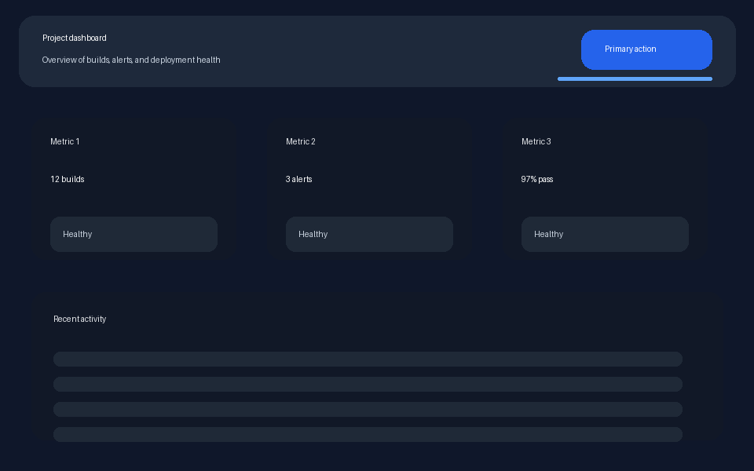
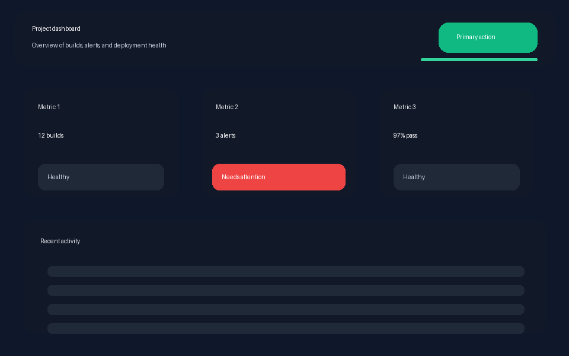
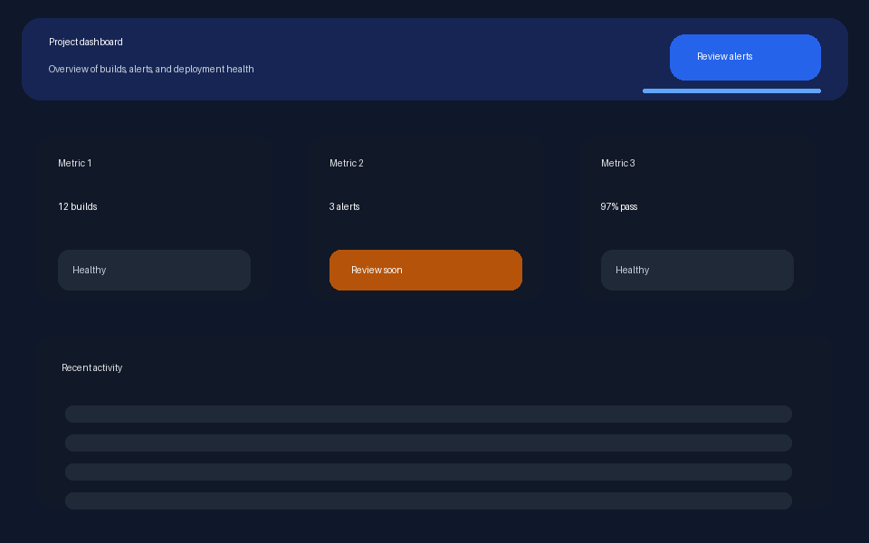

Regression pass
Slide to compare the baseline against the regressed version. The green CTA and red status chip compete for attention, which the scoring prompt correctly calls out.


BaselineRegression
This upgraded page shows the same automation stack in a more compelling way: a visible regression, a polished follow-up pass, actual heuristic scoring output, diff metrics, and the bounded subagent workflow you can run next. It’s all generated from the demo artifacts in artifacts/ui-automation-demo/.
Slide to compare the baseline against the regressed version. The green CTA and red status chip compete for attention, which the scoring prompt correctly calls out.


Here the CTA label becomes specific, the alert state is toned down, and the score improves. It’s still not perfect, but it demonstrates a bounded automated improvement step.

Saved full output: current-score.md
Saved full output: polished-score.md
/ui-heuristic-score can turn that evidence into a structured ship decision.ab_test_visuals.The demo stops short of an uncontrolled self-improvement loop. Instead it hands off to the new bounded worker/reviewer chain:
pi -e ./pi-packages/pi-subagents # then in Pi: /ui-autopolish tighten the demo dashboard layout using \ artifacts/ui-automation-demo/regression-diff.json and \ artifacts/ui-automation-demo/current-score.md as context
Everything on this page comes from the local demo artifacts. You can inspect or reuse them directly.
artifacts/ui-automation-demo/ ├── baseline.png ├── current.png ├── polished.png ├── regression-diff.png ├── regression-diff.json ├── polished-diff.png ├── polished-diff.json ├── current-score.md ├── polished-score.md └── README.md
Walkthrough: docs/ui-automation-demo.md